Task 2 NLP Review
Contents
Task 2 NLP Review¶
After completing our first task, which was to extract previews from the Guardian website, we began our second task, which was to reproduce the results of the (Beal et al., 2020) article by processing and analyzing the texts that we had extracted. The article’s authors proceeded as follows:
Information extraction: they extracted the main features of each sentence in the article’s text.
Allocation of Text Context: each sentence is assigned to a team.
Text Vectorisation: they converted the sentences into vectors using a Count Vectorizer technique to have a numerical representation of the words in a sentence.
Prediction: Once the feature set for each game is formed, they trained a Random Forest model using historic data and the numerical representation of the words in the sentence.
Understanding the fundamental concepts and learning the “spacy” tool were required to properly assimilate these operations.
Spacy is an open source Python library for natural language processing that can be used to extract information from text.
The following techniques were used in this task:
Named Entity Recognition
Spacy Entity Ruler
TF-IDF vectorization
Named-Entity Recognition (NER)¶
The task of identifying and categorizing key information in text is known as Named Entity Recognition (NER). It is also known as entity extraction or identification. Each detected entity is assigned to a predefined category. An NER model, for example, may detect the word “Mark” in a text and classify it as a “Person.”
example :
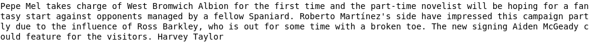

In our case, identifying the names of the teams in the previews is a critical task that will allow us to extract the main features in our text.
This operation is not possible with the standard spacy NER because of errors in entity detection; spacy can consider a team name to be a person and vice versa.
To address this issue, we decided to build a model that will allow us to detect our own entities.
Train a model to detect custom entities¶
Before we implemented our model, which will allow us to automatically detect the names of the teams, we fed it a training dataset with labels generated by an external text annotation tool.
This annotation identifies the custom entities that our model will learn during its training.
 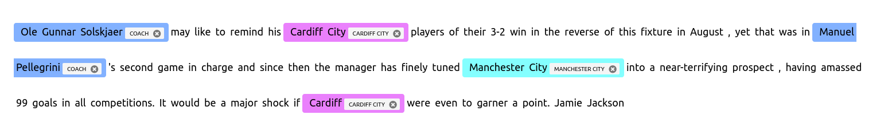
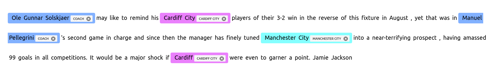
we test again

Entity ruler¶
Using token-based rules or exact phrase matches, the entity ruler allows us to add spans to the Doc entities. It can be used in conjunction with the statistical EntityRecognizer to improve accuracy, or it can be used on its own to implement a rule-based entity recognition system.
We took advantage of the dataset that we have which contains the teams and their different names. in this sense we have linked each name or nickname of a team to its main entity
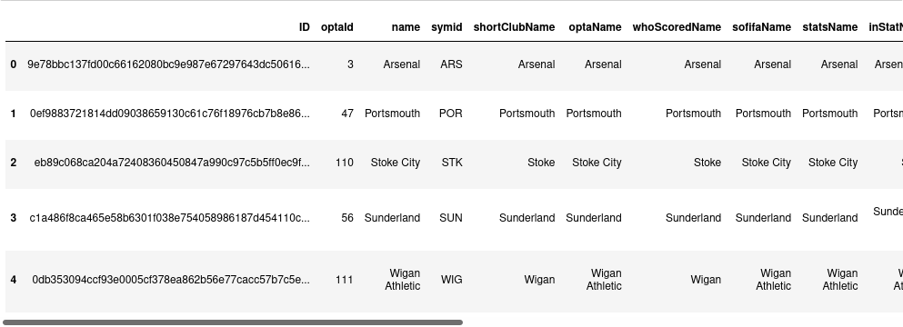
For example the nickname Spurs is now detectable in the text that is linked to the Tottenham Hotspur entity
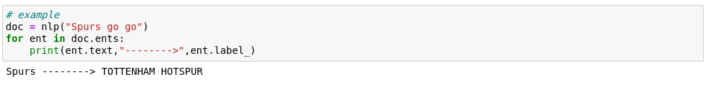
Get the names of the coaches¶
We also noticed that in most of the previews, we find the names of the managers but not the names of the teams, so to ensure the extraction of information, we used a database that we have that contains a history of managers for each team.
As a result, it is now easier to identify the section of the text that refers to one of the two teams.
Example of the dataset
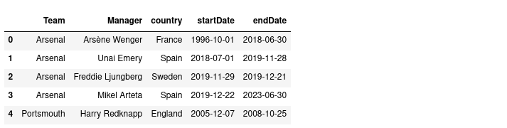
The final output: for each preview, we have the coaches of each team.

Previews Preprocessing¶
First of all, beginning with the tokenization step, which is the task of chopping up texts into pieces in order to remove stop words such as (the,a,an,so,what..). We also removed all punctuation because it isn’t important in the text, and then we used a lemmatization technique that allows for lexical processing, such as (runs, running,ran) => run.
Example of text
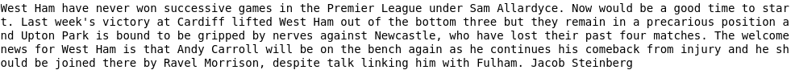
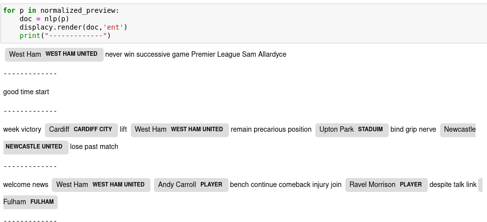
We continue our normalization and move on to the next step, which is detecting the names of the two teams, the names of the coaches, and changing their names by hometeam, awayteam, homecoach, and awaycoach.The reason for this is so that our model’s predictions can generalize.
We noticed that the words ‘hotst,’ ‘home side,’ and ‘visitors,’ which refer to the home team and away team, are frequently used in the previews, and they have been changed.
We take the same example:

Preview after cleanning
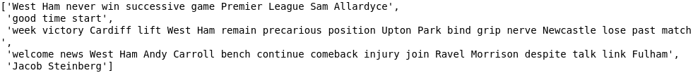
Preview after normalization
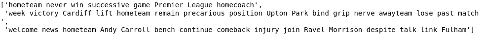
Modeling¶
When the text processing phase is completed, it is time to begin the modeling phase.
However, our model will not be able to understand these raw texts, so we must convert them into vectors, which are digital representations of these character strings.
So the idea is to extract some textual characteristic so that the model can train.
Among the vectorization techniques, we highlight the bag of words: it is a very simple technique that calculates the vectors of a text based on the frequency of vocabulary words.
It is simple to interpret and only refers to the frequency of vocabulary words in a given document.
As a result, articles, prepositions, and conjunctions that do not contribute much to meaning are just as important as adjectives or verbs.
There are other techniques that, in general, work better in machine learning models to address this issue.
For instance, we discover TF-IDF: term frequency-inverse document frequency.
The idea behind the TF-IDF approach is that words that appear less frequently in all documents but more frequently in individual documents contribute more to classification.
these terms can be calculated as follows:
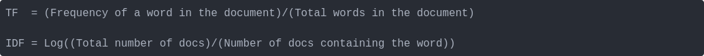
Get target values¶
To enable our model to train and make predictions, we must first provide the target values (the outputs of the matches).
We have set two target values:
The outcome of a match => home win, away win, draw
The goal difference => the difference in goals scored
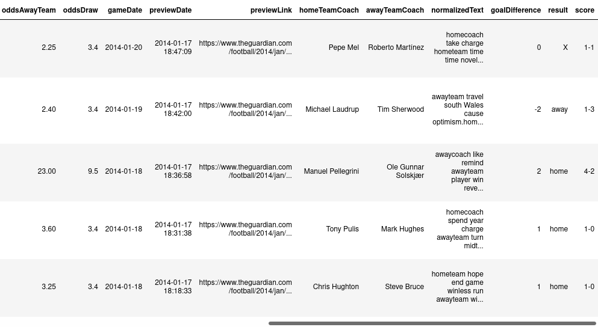
The proportions of the results¶
It is worth noting that the class distribution of English Premier League games that we have from 2009 to 2022 is 45% home wins, draws 25% and away wins 30%.
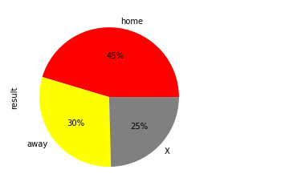